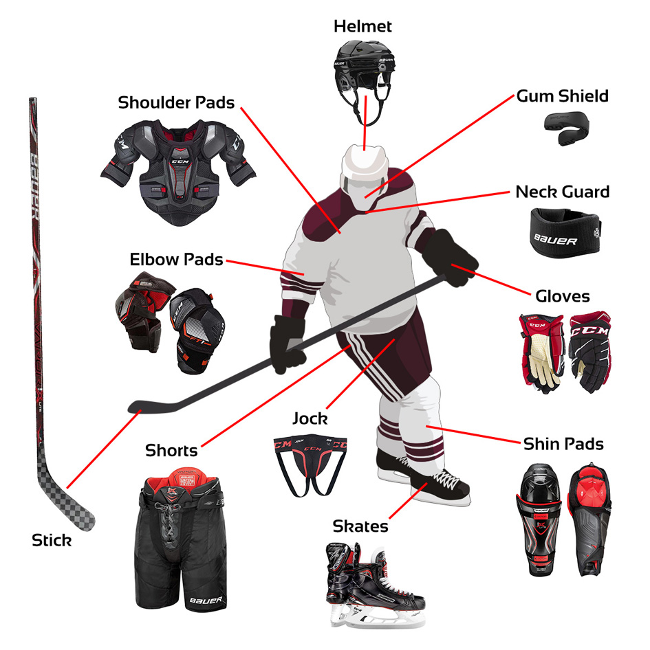

Uitrusting
IJshockey is een harde en soms gevaarlijke sport dus dragen de spelers de nodige bescherming: een toque, helm, scheenbeschermers, elleboogbeschermers, handschoenen, speciale ijshockeybroek en bodybeschermer (schouders, borst en schouderbladen). Dit is omdat lichamelijk contact is toegestaan en de puck hard is en zeer hoge snelheden kan halen (160 km/h is geen uitzondering).
